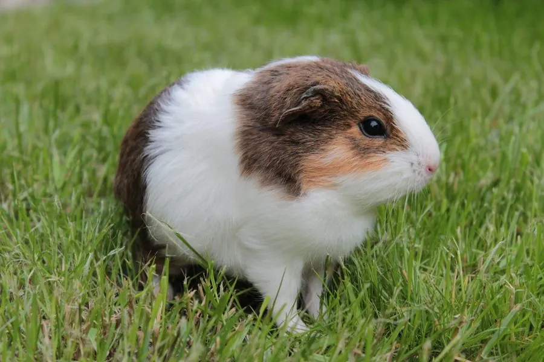

哺乳动物 · 动物界
豚鼠 Cavia porcellus

由南美野豚鼠驯化而来的小型家养啮齿动物，体圆腿短、无尾，社会性强，因性情温顺而成为常见宠物与实验动物。
- 分类
- 门脊索动物门纲哺乳纲目啮齿目科豚鼠科属豚鼠属
- 栖息环境
- 人工饲养环境为主；野生祖先栖于南美安第斯山地的草原与灌丛
- 地理分布
- 全球家养；起源于南美洲秘鲁、玻利维亚一带
- 保护级别
- IUCN 未评估（家养动物）；野生豚鼠属物种多无危
物种志
豚鼠体形圆润，成年体长 20–30 厘米，体重 0.7–1.2 千克，四肢短小，没有尾巴，耳小而圆。毛被因品系不同而差异极大：有短毛、逆毛、长毛等类型，颜色包括白、黑、棕、橙及多色花斑。头部较大，吻部短钝，上唇裂开，门齿终生生长；脚掌裸出，前足四趾、后足三趾。
豚鼠由南美洲安第斯山区的野豚鼠驯化而来，驯化历史约五千年，当地原住民早已将其作为肉食与仪式用动物。它社会性强，喜群居，靠短促的“啾啾”叫声和身体接触交流，受到惊吓时会僵住或急速逃窜。食性为严格的草食，需要不断进食纤维并自行合成维生素 C。母鼠孕期约 59–72 天，每胎 1–4 仔，幼仔出生即睁眼、有毛并能行走。如今豚鼠广泛作为宠物、实验动物与教学动物饲养。
形态与习性
- 体长约 20–30 cm，无尾
- 体重约 0.7–1.2 kg，雄性略重
- 食性禾本科干草、新鲜蔬菜与专用颗粒料，需补充维生素 C
- 繁殖孕期约 59–72 天，每胎 1–4 仔
- 寿命约 5–7 年，饲养得当可达 8 年
- 趾数前足四趾，后足三趾
- 驯化历史约 5000 年前在南美安第斯山区被驯化
趣味知识
- 豚鼠自己不能合成维生素 C，必须从食物中获取，否则会患坏血病。
- 它兴奋时会原地弹跳并发出“啾啾”的叫声，饲养者称之为“爆米花跳”。
- 豚鼠幼仔一出生就睁眼、长毛、几小时内就能跑动。